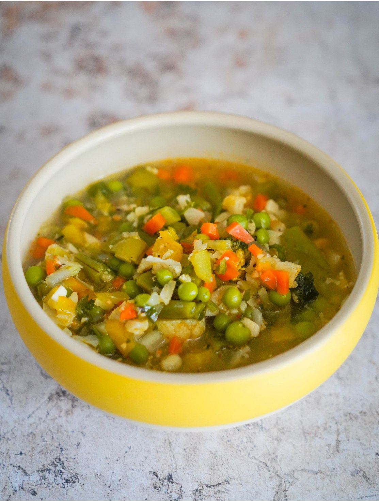

Смысл хорошего овощного супа в том, чтобы минимально варить овощи — так они сохранят свою текстуру. Поэтому это не тот вариант супа, который варится впрок и затем разогревается — при разогревании овощи будут продолжать готовиться и станут слишком мягкими.
Сладкий перец для супа берите теплого цвета: красный, желтый или оранжевый (не зеленый). Если сельдерей у вас тонкий, возьмите два стебля, или один потолще.
Зеленую фасоль для игры текстур можно взять двух видов: тонкую кенийскую и плоскую. Не в сезон можно использовать замороженную фасоль, но тогда добавьте ее в суп вместе с брокколи и зеленым горошком, потому что она варится гораздо быстрее, чем свежая.
Набор овощей для супа можно варьировать в зависимости от того, что сейчас в сезоне или что есть у вас под рукой. Но ориентируйтесь на время варки овощей. Так, зеленые овощи типа брокколи и горошка варятся буквально пару минут, фасоли нужно больше времени, а если используется картошка, то ее нужно варить первой и добавлять остальные овощи, когда она будет уже практически готова.
По желанию суп можно сделать мясным: возьмите любой фарш (говяжий, домашний — смесь говяжьего со свиным, куриный), смешайте с отваренным до полуготовности рисом, мелко порубленным обжаренным или сырым луком и любыми специями, скатайте маленькие шарики и добавьте их в горячий, но не кипящий суп незадолго до того, как будете класть зеленые овощи.
Количество жидкости (воды или бульона) регулируйте в зависимости от того, какой густоты хотите получить суп.
Я готовлю суп на индукционной плите и могу поделиться точными значениями нагрева: 10 из 14 для обжаривания, 8 — для варки.